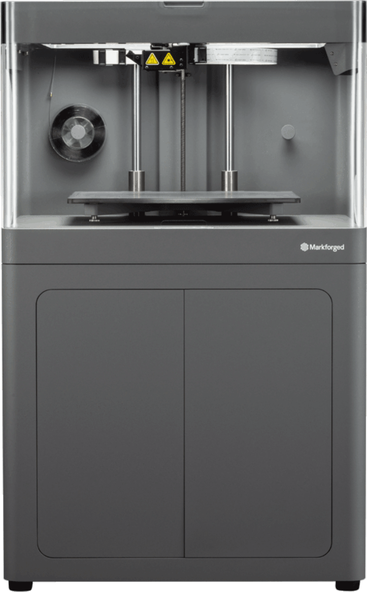

官方客戶案例
X7 在產線上的真實成果
Markforged 官方發布的 138 筆案例中，有 59 筆使用 X7。以下是其中 6 筆。


為產線而生的工業級複合材料 3D 列印機：治具、夾爪、工具與終端零件。330 × 270 × 200 mm 建構體積，連續碳纖維強化零件抗拉強度 800 MPa，支援包括 Kevlar® 與高溫玻纖在內的五種連續纖維。

技術規格
| 製程 | 熔融擠出（FFF）＋連續纖維（CFF） |
| 建構體積 | 330 × 270 × 200 mm |
| 層厚 | 預設 100 µm・最小 50 µm・最大 250 µm |
| 列印床 | 運動學定位，平整度 80 µm 以內 |
| 雷射 | 列印中檢測・主動列印校正・自動調平 |
| 塑料 | Onyx・Onyx FR・Onyx ESD・Nylon White・Precise PLA・Smooth TPU 95A |
| 連續纖維 | 碳纖維・阻燃碳纖維・玻璃纖維・Kevlar®・高溫玻纖 HSHT |
| 抗拉強度 | 800 MPa（連續碳纖維；約 6061-T6 鋁的 2.6 倍） |
| 機台重量 | 48 kg |
| 機台尺寸 | 584 × 483 × 914 mm |
| 電源 | 100–240 VAC，150 W |
| 無線連線 | 2.4 GHz Wi-Fi（802.11 b/g/n） |
| 管理平台 | Eiger Cloud（雙重驗證・SSO） |
規格取自 Markforged X7（Gen 2）原廠規格書 REV 4.9。
核心優勢
碳纖維、阻燃碳纖維、玻璃纖維、Kevlar® 與高溫玻纖 HSHT。在 Markforged 現行工業機中，Kevlar® 與 HSHT 玻纖只有 X7 與 X7 Field Edition 支援。
連續碳纖維強化零件抗拉強度 800 MPa，約 6061-T6 鋁的 2.6 倍，可以直接當治具、夾爪與終端零件使用。
機上雷射在列印過程中掃描零件，主動校正列印並自動調平；搭配 Inspection 軟體（另購）可產出尺寸量測報告。
一般插座供電（150 W）、機台 48 kg；Eiger Cloud 統一管理列印、零件庫與權限。
主要應用場景
產線定位、組裝與加工用的治具，取代外包機加工件，交期從數週縮短。
輕量化夾爪減輕手臂負載，可依工件快速改版。
檢具、CMM 夾具與 Go/No-Go 量規，配合列印中雷射檢測掌握尺寸。
小批量終端件、停產備件與維修零件，按需列印、免備庫存。
官方客戶案例
Markforged 官方發布的 138 筆案例中，有 59 筆使用 X7。以下是其中 6 筆。